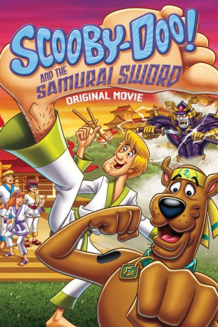

#2472 Scooby-Doo und das Samurai Schwert
Alternativ: Scooby-Doo and the Samurai Sword (Originaltitel)
 
 IMDB-Wertung: 6.6 / 10
IMDB-Wertung: 6.6 / 10  Metascore: 0
Metascore: 0 
Scooby-Doo und seine Mystery-Gang nehmen an einer Martial-Arts-Veranstaltung in Tokio teil. Daphne beherrscht bereits ein bisschen Kung Fu und freut sich auf das Event. Gemeinsam mit einer japanischen Freundin möchte sie ihre Kampfsport-Fähigkeiten in einem Wettbewerb unter Beweis stellen. Doch plötzlich taucht der Geist eines Samurais auf und Scooby-Doo erkennt sofort, dass dieser nichts Gutes im Schilde führt. Schnell wird klar: Das ist ein neuer Fall für die Mystery Gang!
Jahr: 2009
Dauer: 75 Minuten
FSK:
Land: USA Studio: Warner Home VideoTonspuren:
Untertitel:
Auflösung: 720p (1280x720) Größe: 1525 MB
Genre: Animation/Trick, Komödie, Familie, Mystery
Regisseur: Christopher Berkeley
Drehbuch: Joe Sichta, Nishit Shah
Soundtrack: Thomas Chase
Darsteller:
Datei: X:\Kinder Collections\Scooby-Doo\Scooby-Doo und das Samurai Schwert (2009, FSK, 1280x720).mkv seit 12.11.2015
Festplatte: Kinder-Filme+Trick
 Es gibt insgesamt 17 Filme in der Gruppe 'Kinder Collections\Scooby-Doo'
Es gibt insgesamt 17 Filme in der Gruppe 'Kinder Collections\Scooby-Doo'